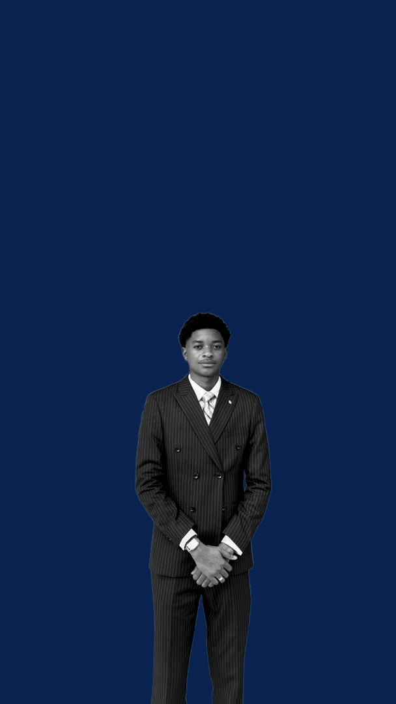

Des données.
Aux décisions.
Diplômé d'une Licence professionnelle en IA et Big Data, je construis toute la chaîne de la donnée, de la collecte jusqu'à l'application que les équipes utilisent au quotidien.

Une donnée brute,
un outil qui sert.
J'aime prendre une donnée en désordre et la mener jusqu'à un outil que quelqu'un utilise vraiment. Pendant mon stage en informatique décisionnelle chez Techno Mega Partners, puis avec mon projet de fin d'études, j'ai travaillé sur toutes les étapes : modélisation, préparation, Machine Learning et mise en production.
« Rendre la donnée utile à ceux qui décident, avec des résultats mesurés et expliqués. »Onel Ngoma
Ingénierie des données
Des pipelines automatisés qui collectent, nettoient, testent et chargent la donnée dans un entrepôt bien modélisé.
Machine Learning
Des modèles comparés avec rigueur, évalués sur des données jamais vues, et expliqués avec SHAP.
Décisionnel & applis
Des tableaux de bord et des applications web qui mettent les résultats entre les mains des équipes.